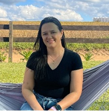
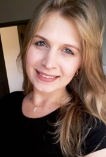
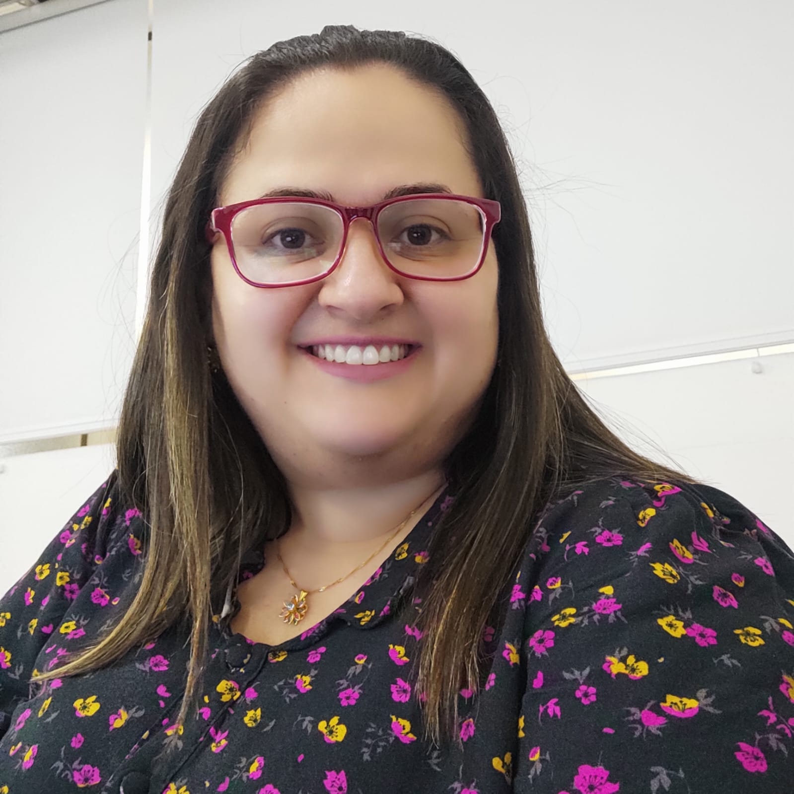
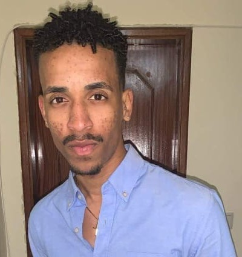

| Foto | Nome | Mini-Currículo |
|---|---|---|
|  | Débora Danieli Pontarollo Gonçalves | Mestre pelo Programa de Pós-graduação em Ensino de Ciências e Tecnologia (PPGECT) da Universidade Tecnológica Federal do Paraná (UTFPR) campus Ponta Grossa. Possui especialização em Educação Especial e Inclusiva pelo Centro Educacional Uninter (2018). Especialização em Educação Infantil e Ludopedagogia pela Faculdade Venda Nova do Imigrante (2019). Licenciada em Pedagogia pela Universidade Estadual do Centro-Oeste (2016). Tem experiência na área de Educação, com ênfase em Educação. Atua na Prefeitura de Ponta Grossa, no ensino fundamental anos iniciais. Cursando Especialização em Alfabetização e Letramento pela Universidade Estadual de Ponta Grossa - UEPG (2022-2024). |
|  | Denize Luana Korzenievski | Graduada em Licenciatura em Pedagogia pela Universidade Estadual de Ponta Grossa- UEPG (2016). Pós- Graduação Lato Sensu em Educação Especial e Inclusiva pela Faculdade de Educação São Luís (2018). Especialização em Alfabetização e Letramento pela Faculdade Unina (2020). Atua como professora no Ensino Fundamental I, anos iniciais, na rede Municipal de ensino de Ponta Grossa. Mestranda na Universidade Tecnológica Federal do Paraná- UTFPR, Campus de Ponta Grossa no Programa de Pós-Graduação Ensino de Ciências e Tecnologia- PPGECT. |
|  | Sabine Cassol | Tecnóloga em Análise e Desenvolvimento de Sistemas pelas Universidade Tecnológica Federal do Paraná - UTFPR. Especializada em Mídias Digitais pela Universidade Positivo, e mestranda em Ensino de Ciência e Tecnologia pela UTFPR. |
| Tatiana Kolly Wasilewski Rodrigues | Professora de Proteção de Dados Pessoais e Direito Eleitoral Digital da PUCPR. Assessora da Ouvidoria do Tribunal Superior Eleitoral. Doutoranda em Ensino de Ciência e Tecnologia na Universidade Tecnológica Federal do Paraná-UTFPR. Mestre em Direito Negocial pela Universidade Estadual de Londrina-UEL. Especialista em Direito Eleitoral, Ciência Política, Data Warehouse e Business Intelligence. Bacharel em Direito pela Universidade Estadual de Maringá-UEM. Graduanda em Análise e Desenvolvimento de Sistemas pela ETEP e Pedagogia pela UNIFCV. | |
| Marisa Fernandes Bom Jesus | Inspectora da Educação, Mestranda em Tecnologias Digitais em Educação e Formação, Pós-Graduada em Inspecção da Educação | |
|  | Audair | Mestrando em Tecnologias Digitais em Educação e Formação |